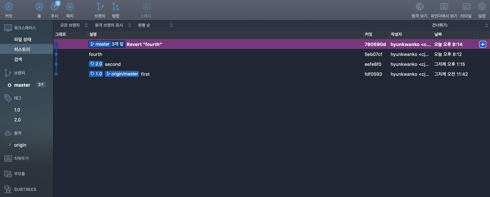
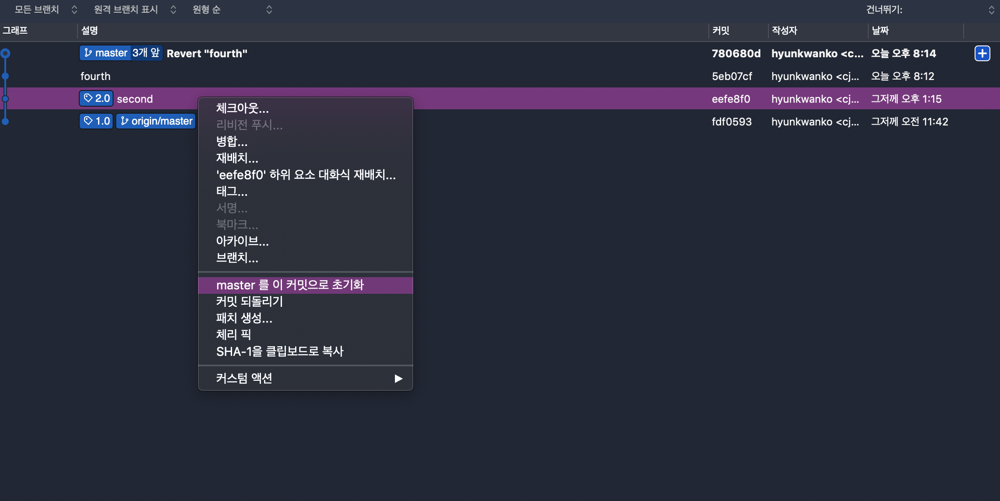
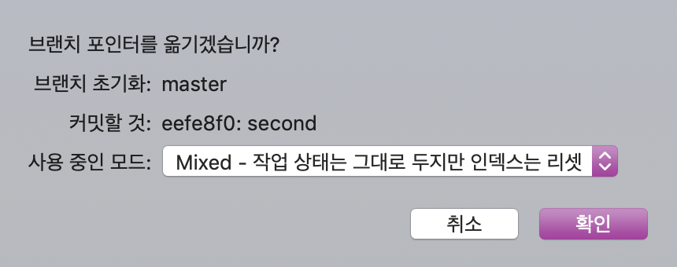
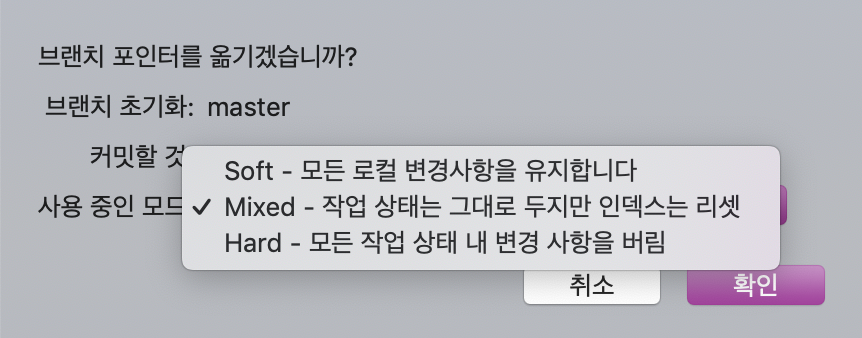
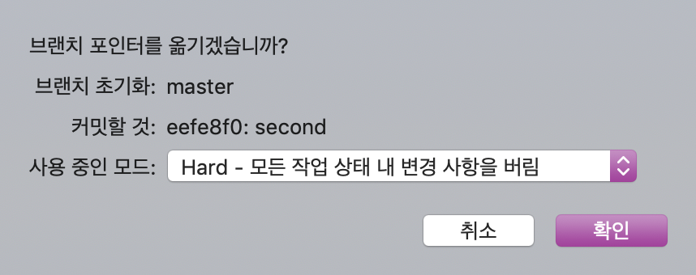
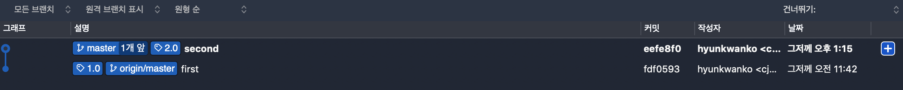

Sourcetree 실행 시 첫 화면

Local에서 디렉토리 불러온 후 현재 Commit 상태 확인

되돌아갈 Commit 우클릭 후 'master 를 이 커밋으로 초기화' 버튼 클릭

확인창

reset하는 방식에 3가지 모드가 존재. 원하는 모드를 선택해서 확인

모든 변경 사항을 다 삭제하고 되돌아가는 'Hard' 선택

이전 Commit들을 삭제하고 돌아간 모습 확인
